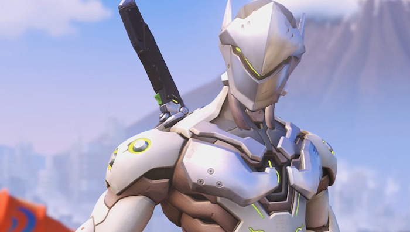
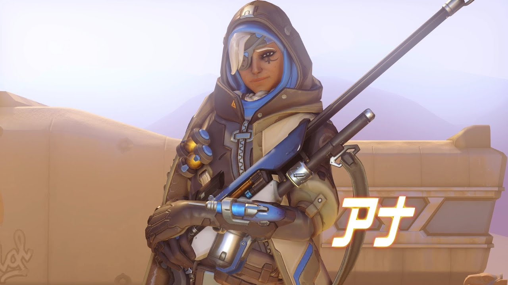

皆さん、こんにちは
元副部長から”希望郷いわて文化大使”に就任したSPYGEAこと高橋恵と同じキーボードをいただいた元部長の綿菓子です
今日は僕がやっているオーバーウォッチというゲームについてご紹介したいと思います
目次
- オーバーウォッチってどんなゲーム？
- どんなヒーローがいるの？
- 面白いの？儲かるの？
- 最後に
- 参考文献
オーバーウォッチってどんなゲーム？
オーバーウォッチは３１人のヒーローの中からタンク２人、ダメージ２人、サポート２人を選び６人チームで戦うFPS、人（一部例外を除く）を撃つゲームです。
多彩なスキルと各ヒーローが持っているウルト（必殺技）を駆使して敵をシバきあげたり、シバきあげられたりします。
一つの拠点を攻め込む側と防衛する側に分かれる「アサルト」やペイロードを目的地まで護衛する側とそれを阻止する側に分かれる「エスコート」といった８種類のゲームモードと２０を超えるマップが存在しています。
各ロールの役割
タンク
タンクと言われるヒーローは味方を守るのが役目です。肉壁。ヘルスは400～600
人気がないロールなので、ロール毎にマッチングするオーバーウォッチでは、いつでもすぐにマッチします。
ダメージ
ダメージと言われるヒーローは、その名の通り敵を倒すことが役目です。ヘルス150～250
人気が非常に高いロールなので、中々マッチしません。
サポート
サポートと言われるヒーローは味方を支援することが役目です。ヘルスは200～250
回復、シールドの付与、ダメージ強化など、さまざまな支援能力を駆使して、チームに貢献します。そこそこマッチします。
どんなヒーローがいるの？
オーバーウォッチではプレイするヒーローを選ぶことができます。
月からやってきた、遺伝子操作で生まれたゴリラ。時空を超え、目にも留まらぬ速さで相手を翻弄するファイター。戦場を駆け回りながらビートを刻むDJ。ピョンピョン飛び跳ねて、手裏剣を投げて剣を抜く忍者。
個性的なヒーローがたくさんいるので、他にどんなヒーローがいるのかいくつか紹介したいと思います。
タンク
D.VA
CV.種田梨沙。あの人気スマホゲーム「Fate/Grand Order」のマシュ・キリエライトと同じ声優です。
メックを操るヒーローでリロード不要のショットガンを撃ちヘルスを０にされてもメックが破壊されるだけでキル扱いにならずに中身が飛び出るだけです。
ウルトがメックを自爆させることで敵に瞬間的にすごいダメージを与えます。どれくらいすごいかというと、大抵のダメージ、サポートヒーローを５回はキルできる位。
ラインハルト

オーバーウォッチの代表的なキヒーローの一人。
盾を張って味方を守るのが役割。FPSとゲームの中でも珍しい銃を持たずにハンマーを振るヒーロー。
一人称は我が輩。唯一の遠距離攻撃手段がハンマーを振る事で火炎弾を飛ばします。また、「チャージ」と呼ばれるスキルで、一瞬のための後に猛スピードで突撃して人身事故を起こすことが出来ます。大体のキャラはこれで確殺できます。
ロードホッグ
通称豚。タンク系のヒーローの中で唯一バリアを持たないタンク。
その代わりに高い攻撃力と自己回復、ダメージ軽減などを持っています。
フックを投げて敵を引き寄せることが出来るので、敵陣地にいるヒーローをフックで引き寄せて味方と一緒にリンチする事で、キルを取ることが出来ます。
ダメージ
ゲンジ
 ピョンピョン飛び跳ねて手裏剣を投げて剣を抜くサイボーグ忍者。
これまたFPSなのに、１回３発の手裏剣を投げ、壁を登ったり二段ジャンプができるヒーローです。
ビーム系の攻撃以外だったらほぼなんでも跳ね返せる木の葉返しというスキルと、瞬間的な移動と攻撃が可能な風切りというスキルで高機動戦ができます。
ウルトは龍撃剣と呼ばれる剣を抜いて、振り回すことができます。
いい年こいた大人が剣抜いて大喜びできるヒーローです。
トレーサー
オーバーウォッチの代表的なヒーローの一人。
連射性能の高い二丁拳銃とブリンクという高速移動できるスキルを駆使して敵を攪乱するヒーロー。
ダメージを食らっても時間を戻すリコールというスキルで無かったことにできます。
オーバーウォッチのタイトルを飾る代表キャラなんですけど、ヘルスも全ヒーロー中最低でキャラコンも難しい上級者向けのヒーローです。
リーパー
二丁のショットガンを持って、近接戦を得意とするタンクをシバくのに向いたヒーロー。
シャドウ・ステップという瞬間移動できるスキルにレイスフォームという無敵になって敵陣地から抜け出すことが出来るスキルを持っている。
トレーラームービーでの任務成功率はほぼ０％
ウルトは全方向へショットガンを乱れ撃ちをするが、その様子から盆踊りやベイブレードといったあだ名がつけられています
サポート
アナ
仲間を回復する注射器みたいな弾を撃つスナイパー。
敵を眠らせたり、味方に当たれば回復量を増やし、敵に当たれば回復を阻害することが出来るグレネードを投げたりと味方にいると非常に嬉しいヒーロー。
ウルトのナノブーストは即時回復、移動速度上昇、敵への与ダメージが増加して被ダメージが減少します。ゲンジの龍撃剣と相性がとても良く、ゲンジを使っている時にナノブーストを貰うと嬉しくなっちゃいます。
ゼニヤッタ
機械の僧侶。味方に回復のオーブと敵に被ダメージを上げるオーブをつけることが出来る
オーブを投げたり、最大５発までチャージしてオーブを敵にぶつけて攻撃します。近接攻撃は僧侶キック。
ウルトの心頭滅却は本体が金色に光って腕が８本になり、範囲内の６秒間毎秒300のヘルスを回復することが出来ます。めっちゃ強い
ルシオ
音楽によって範囲内の味方を回復し、移動速度上昇を切り替えることが出来るヒーロー。壁を走ったりとこれまた普通のFPSでは中々見ない移動手段を持ちます。
音波弾を撃ったり、衝撃はで敵を吹き飛ばしたりと音を武器に戦うヒーローです。
ウルトのサウンドバリアは一時的に味方のヘルスを増やすことが出来ます。強い。
他にもたくさんのヒーローがいるんですが、全部紹介してたらとんでもない量になるので割愛させてもらいます
面白いの？儲かるの？
まず、面白いです（結局は人それぞれですが）
僕はこれまでソウルシリーズなどのアクションRPGばかりでFPSをほとんどして来なかったのですが、２日間で３０時間プレイするくらいハマりました。
操作できるヒーローの数が多いので、色々なヒーローでプレイできる楽しさや、チーム戦なので友達と遊ぶのにはもってこいのゲームだと思います。
次に儲かるかどうかですが、オーバーウォッチ内の大会「オーバーウォッチリーグ」の選手の最低年俸は５万ドルだそうです。大体550万円くらいですね。
他にも健康保険や退職金積立制度の提供が義務付けられている他、チームが「オーバーウォッチリーグ」や他のイベントにて獲得した賞金の最低50%以上がプレイヤーに配分されるとのことです。
結構儲かりますね！
最後に
こんなしょうもない記事を最後まで読んでくれてありがとうございます。
僕がこのゲームを病気みたいに出来たのも、一緒に遊んでくれたソフメの人を始めとする多くの友人達のおかげです。
何度も言っているのですが、ソフメは人数がとても多いのでゲームで一緒に遊ぶ友達、ご飯を食べに行ったり旅行に行ったり、創作をしたりする友達をたくさん作ってください！
ご清聴ありがとうございました
参考文献
https://detonator-gg.com/official/17664/
https://playoverwatch.com/ja-jp/